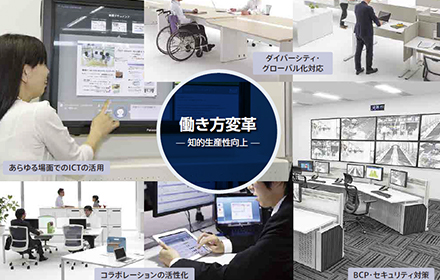

- 「働き方の変革」「学び方の変革」「場と街づくり変革」の実現に向けて
-

働き方の変革
1989年より「知的生産性研究所」にて、オフィスワーカーの知的生産性向上に関する調査・研究に取り組み、大手企業や官公庁・自治体のお客さま向けに、生産性が向上するオフィスづくりや、それを支援するＩＴシステム構築に取り組んでいます。
-
学び方の変革
1998年より「内田洋行 教育総合研究所」にて、省庁から学校現場まで幅広く協同で教育研究を進め、小中高大を中心にアクティブ・ラーニングを実現するこれからの新しい教育環境づくりに取り組んでいます。
-

場と街づくり変革
地域の企業、自治体・大学・図書館等の公共施設による人が集まる場の空間の設計・デザイン、そして、それをバックエンドで支えるICT環境を整備し、地域活性化を支援していきます。